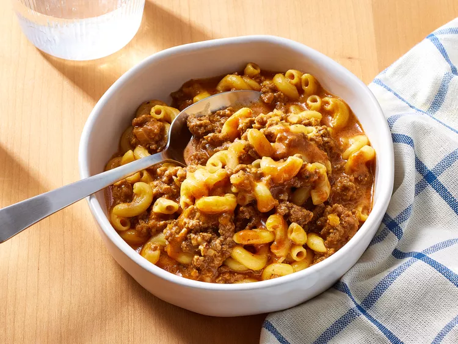

Homemade Hamburger

Description
A homemade hamburger is a classic, hearty meal made by grilling or pan-searing a seasoned beef patty until it’s juicy and perfectly cooked. Nestled in a soft, toasted bun, the patty is often topped with melty cheese, fresh lettuce, ripe tomato slices, and a layer of pickles or onions for a satisfying crunch. A generous spread of condiments like ketchup, mustard, or mayo brings all the flavors together, creating a delicious balance of savory, tangy, and fresh elements
Ideal for family dinners, cookouts, or just a simple treat at home, a homemade hamburger is customizable to suit any taste. Whether you prefer a classic American cheese topping, a dash of spicy sauce, or adding avocado and bacon for extra richness, this burger is as versatile as it is comforting. It’s a delicious way to enjoy a timeless favorite with all the freshness and flavor of a home-cooked meal.
Ingredients
- 1 pound 85% lean ground beef
- 1/2 cup diced yellow onion
- 2 tablespoons tomato paste
- 1 tablespoon ketchup
- 1/2 teaspoon garlic powder
- 1/2 teaspoon chili powder
- 1/2 teaspoon kosher salt
- 1/4 teaspoon paprika
- 1/4 teaspoon ground black pepper
- 3 1/2 cups beef broth
- 1 cup elbow macaroni
- 6 ounces Cheddar cheese, shredded (about 1 1/2 cups)
Steps
- Gather all ingredients
- Heat a large, heavy-bottomed pot over medium-high heat. Add beef and onion, and cook, stirring occasionally, until beef is crumbled, browned, and no longer pink, about 7 minutes. Spoon off and discard any fat.
- Stir in tomato paste, ketchup, garlic powder, chili powder, salt, paprika, and pepper; cook, stirring constantly, until fragrant, about 2 minutes.
- Add beef broth, and bring to a boil over high heat. Stir in macaroni; reduce heat to medium, and gently boil, uncovered, stirring occasionally, until pasta is tender and most of the liquid is absorbed, 13 to 15 minutes.
- Remove from heat, and stir in Cheddar, ensuring cheese is fully melted and incorporated, 30 to 45 seconds. Let stand until thickened before serving, about 2 minutes.